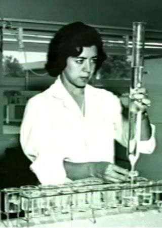
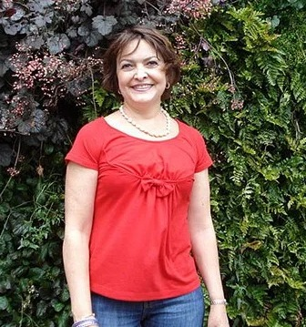

Ciencia y Cientificos en México
El inicio del estudio de esta disciplina en México se remonta al primer curso de Biología dictado en la Escuela Normal de Maestros en 1912 por Alfonso Luis Herrera López, el cual despertó el interés por estudiar esta ciencia en nuestro país. Mientras la ciencia, el gobierno y las empresas trabajen en conjunto, el progreso tecnológico en nuestro país se detendrá. Sin embargo, ha habido algunos campeones de la ciencia que, gracias a la fuerza de su ingenio, han conseguido superar esta barrera y contribuir a la ciencia y la tecnología.
Evangelina Villegas (1924)
La proteína de maíz de alta calidad (QPM) contiene el doble de proteínas aprovechables por los seres humanos que el maíz tradicional. Además de que produce 10% más grano. El maíz es el alimento básico de gran parte de los países más pobres del mundo. Gracias a la innovación de esta mexicana, se puede obtener un maíz que combata la malnutrición de niños y adultos alrededor del globo.
Tessy López Goerne (1961)
La nanomedicina catalítica es un nuevo campo de la medicina moderna. Esta investigadora ha sido capaz de insertar pequeñas dosis de medicina en nanoparticulas. Con ello se pueden tratar enfermedades como el Alzheimer, el Parkinson o el cáncer sin necesidad de cirugía o quimioterapias.